目录 · 6 节
1常见 SID 只在文档空间里压缩2CARE-SID：先把空间拉向检索，再量化3走一遍：同一份误差，A 和 B 却能换位4工业视频搜索数据上，离线能高多少5这对做生成式检索的人意味着什么6局限只看重建误差，看不出 A 和 B 会不会换位：视频搜索的 SID 怎样保住查询下的顺序
用户在视频 App 里搜「拉花教程」。生成式检索不去向量库里找近邻。它先给每个视频编一个很短的 Semantic ID，叫 SID，再让语言模型根据这条查询和用户点过的视频，一位一位写出目标 SID，然后返回这个 ID 下面挂着的视频。论文图 1 里的查询和数字是示意。
SID 是生成模型能看见的唯一地址。同一个 SID 下的视频只能一起被召回。量化时丢掉的信息，后面拿不回来。常见编法优化的是文档侧的失真、重建、格点拟合或桶容量，没有直接约束查询来了以后相关视频还排不排在前面。两套重建可以有同样的逐篇误差，一套保住顺序，另一套把查询下的 A 和 B 对调。
这篇论文来自腾讯，做的是工业视频搜索里的 SID 分词器。现有的 RQ-KMeans、RQ-VAE 都在文档 embedding 上优化失真或重建误差，不问查询。R3-VAE 是 2026 年提出的量化方法，用一个共享的参考向量和逐层的 rating 残差量化来编 SID，这里作为量化内核。作者提出两套方法。方法 CARE-SID 在量化前加一个残差对齐网络，用查询和文档的对比学习，把空间拉向检索需要的方向。方法 CARE-LR 再把原始 embedding 在候选列表上的相似度分布，蒸馏到 SID 的重建结果上。编码时仍然只用文档自己的 embedding，新视频可以按同一套权重增量编码。离线评估里，重建视角的 Recall@10：RQ-KMeans 是 62.75%，CARE-SID 是 65.23%，CARE-LR 是 66.09%。CARE-SID 已经用在工业视频搜索的生成式检索阶段。
按查询排序来编和评价 SID，重建视角的 Recall@10 比 RQ-KMeans 高 3.34 个点；这些数字是离线 SID 级指标，CARE-LR 还只是小规模试跑，生成模型端到端结果尚未报告。
常见 SID 只在文档空间里压缩
RQ-KMeans 一层一层减小残差，RQ-VAE 优化重建和 codebook 损失，还有工作用固定格子或事后调节桶的容量。它们的目标都定义在文档 embedding 上。检索要的却是：同一个查询来了，相关文档能不能排在不相关的前面。量化总会丢信息，关键是丢在哪。如果丢在查询用来分开相关和无关的方向上，失真不大，召回也会掉。
作者因此问了两个问题。该在哪个空间里量化，才能少伤查询要用的方向？量化之后，又怎样保住每个查询对候选的相对顺序？
评价也不走生成模型。论文用行预算召回，直接看 SID。主指标在 CARE-LR 实验前就定好了：按完整三位数 SID 分桶，用桶里重建向量的均值当键，再按查询余弦排序，在预算 10 条文档下算召回。这叫重建视角的 Recall@10。它看的是 SID 加上重建通路还剩多少检索能力，不必先训练生成模型。
CARE-SID：先把空间拉向检索，再量化
直接量化上游 embedding，等于假设这个空间已经最适合切分。CARE-SID 不这么做。它在量化器前面加一个残差对齐网络：先把文档 embedding d 送进两层网络得到修正，再加回自身并归一化，得到 z。输出层从零开始，所以训练起步时 z 就等于 d，前面用 RQ-KMeans 和 R3-VAE 热启动好的 codebook 仍然有效。
训练时，同一套网络也作用在查询上。对比损失在对齐后的向量上拉动正样本对，锚定损失让 z 不要离开原来的 d。重建目标也固定为原始的 d，不用对齐后的 z，这样对齐网络不能靠把空间塌缩来把重建损失做低。查询只出现在训练目标里。真正给视频编码时，仍然只用它自己的 embedding：先对齐，再去掉共享的参考方向，然后做三层 rating 残差量化，得到三位数 SID。
更简单的做法，是把对比损失直接加在量化之后的码上。作者在更早的开发轮次里试过，那样只能推动 codebook，容易把许多文档挤进同一批桶。CARE-SID 把对比放在量化之前，再用锚定拉住。重建头在训练和离线评价时才会用到，上线编码不需要它。参考系数是对齐后向量 z 和共享参考向量 r 的内积，参考分量 v0=(z⊤r)r，去掉后得到残差 e0=z-v0。每一层先把残差归一化，选出余弦最大的码字，rating 是这个余弦，该层分量是 rating 乘上选中的码字，再从残差里减掉，进入下一层。重建头把参考分量和三层分量加在一起，经过一个 MLP 再归一化，得到重建向量。SID 只记录三层选中的码字编号，不含 rating 和参考系数，所以同一个 SID 也可以对应不同的重建向量。 Hoot 说
正文已经按图 4 走完：同一份逐篇误差下，A 和 B 可以对调，列表级 KL 能把两套重建分开。这里只追一个还没拆开的点：对比损失如果加在量化之后的码上，推动的是谁。下面的 16,305 和 9,069 来自论文 §6.1 的一次极端尝试，不是示意数字。
对比加在量化后的码上，只能推动 codebook → 极端尝试里一级码字从 16,305 降到 9,069，检索变差 → CARE-SID 把对比放在量化前的对齐向量 z 上，输出层为 0，起步时 z=d → 锚定拉住 z，重建目标固定为原始 d，对齐网络不能靠塌缩空间把重建损失做低
- 对比损失加在量化之后的码上 → 只能推动 codebook码已经是选好的离散编号，对比信号到不了对齐网络，只能改 codebook 里的码字。作者在更早的开发轮次里试过这样做。被推动的对象 = codebook，不是对齐网络
- 直接约束离散码 → 一级码字从 16,305 降到 9,069，检索变差一次极端尝试里，一级码字从 16,305 个降到 9,069 个，少了 7,236 个。许多文档被挤进同一批桶，检索变差。16,305 − 9,069 = 7,236 个一级码字被挤掉
- CARE-SID 把对比放在量化之前 → 推动的是对齐网络，起步时 z 仍等于 d对比损失改加在对齐后的向量 z 上。对齐网络的输出层从 0 开始，所以训练起步时 z 等于原来的 d，前面热启动好的 codebook 仍然有效。输出层 = 0 → 起步时 z = d
- 锚定和固定为原始 d 的重建目标 → 对齐网络不能靠塌缩空间把重建损失做低锚定损失让 z 不要离开原来的 d，重建目标也固定为原始的 d 而不是 z。这样对齐网络不能靠把空间塌缩来把重建损失做低。重建目标 = 原始 d，不是 z
图 8 比较的是 CARE-SID（量化前加了对齐）和 R3-VAE（没有这套对齐）的离线差距，不是上面 16,305 降到 9,069 那次试验。搜索调过的 embedding 上，这个差距会缩到很小。

出处
正文与论文 §6.1：曾尝试直接约束离散码，极端情形下一级码字从 16,305 降到 9,069，检索变差。§5.1：残差对齐网络输出层零初始化，起步时 z=d。§5.2：对比损失加在对齐后的向量上，锚定损失让 z 靠近 d，重建目标是原始 d 而不是 z。Figure 8 只用来对照加上 CARE-SID 对齐之后的离线差距，不是 16,305→9,069 那次试验的图。走一遍：同一份误差，A 和 B 却能换位
下面用论文图 4 的数字走一遍。温度是 0.05，三个候选是 A、B、C。这些余弦是图上列出的算例。
第一步，看老师。原始 embedding 对查询的余弦是 A 0.70、B 0.66、C 0.55。相差 0.04，除以温度 0.05，得到 0.8，e 的 0.8 次方大约是 2.2，所以 A 的概率大约是 B 的两倍多。softmax 之后，概率是 0.67、0.30、0.03，顺序是 A 在 B 前面。
第二步，看保住顺序的重建。余弦变成 0.63、0.59、0.49，概率变成 0.66、0.30、0.04。顺序没变，这样列表级 KL 只有 0.001。
第三步，看对调的重建。余弦变成 0.59、0.63、0.49，A 和 B 换了位，概率变成 0.30、0.66、0.04。列表级 KL 升到 0.29。这说明逐篇重建误差可以看起来差不多，但查询下的第一名已经从 A 换成了 B。只比较每篇文档和它自己的重建，看不出这次对调；比较整张列表的概率分布，能看出来。
第四步，CARE-LR 要监督的就是这张列表。每个训练查询带一份候选，最多 32 个来自真实搜索漏斗，再加最多 16 个近邻和 16 个随机文档。老师用原始 embedding 的余弦做 softmax，学生用重建向量的余弦做 softmax，两者做 KL，温度同样是 0.05。漏斗来源只用来分层抽样，点击和排序分不做目标。另有一项重建损失，作用在背景文档上，避免重建在整个文档分布上变差。
第五步，为了让蒸馏从头就接在 CARE-SID 上，新增的层析重建头从零开始，其余参数原样拷贝，训练起步时和 CARE-SID 是同一个函数。对齐网络、参考向量和第一级 codebook 冻结，只更新后两级 codebook 和重建头。编码接口不变，每个视频的第一位 SID 也不变。
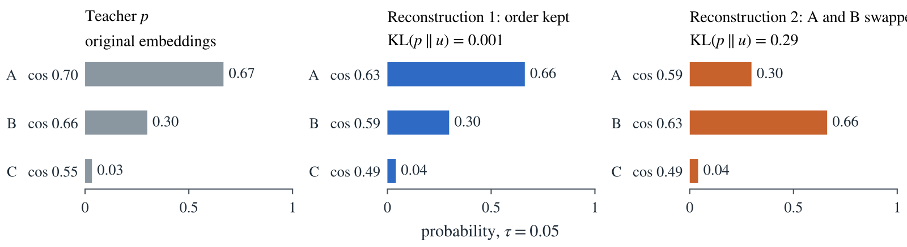
作者也试过直接约束离散码，比如让同一查询的相关文档共享前缀。这很容易把桶并得过狠。在一个极端设置里，一级码字从 16,305 个降到 9,069 个，检索反而变差。所以 CARE-LR 监督的是重建通路，编码接口保持不变。
工业视频搜索数据上，离线能高多少
训练用的是该视频搜索服务里生产规模的文档 embedding 和查询-文档正样本对。评价池有 1,001,700 篇文档。查询分成四段，通用和长尾的理想文档由人工标注，高点击和高曝光的理想文档来自七日内的用户行为，共 2,990 条查询。查询始终用原始 embedding，不经过对齐网络，也不量化。RQ-KMeans 和 R3-VAE 就是 CARE-SID 热启动的前两阶段，所以 CARE-SID 相对 R3-VAE 的差距，衡量的是第三阶段作为整体的贡献。
CARE-LR 的数字来自小规模试跑：训练查询和候选大约来自一百万条搜索漏斗列表，每步 8 个查询和 512 篇背景文档，共跑 1,000 步。论文把它称为方法的首次验证。
| 方法 | Recall@10 | 相对 RQ-KMeans |
|---|---|---|
| RQ-KMeans | 62.75% | — |
| R3-VAE | 65.15% | +2.40 |
| CARE-SID | 65.23% | +2.48 |
| CARE-LR | 66.09% | +3.34 |
（数字来自论文表 3，指标是重建视角 recon_P3@10。CARE-LR 相对 RQ-KMeans 的配对 95% 区间是 +2.30 到 +4.36。）
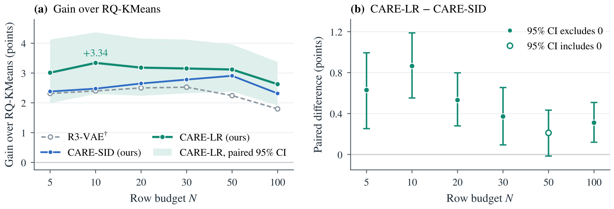
CARE-LR 相对 CARE-SID 在 @10 再高 0.86 个点，区间是 +0.55 到 +1.19，提升集中在排序头部；到 @50 时，区间已经包含 0。消融说明，这笔收益来自列表级 KL：加到原来的求和头上是 +0.70，加到层析头上是 +0.85，两个区间都不含 0。只换头结构，以及头和 KL 的交互，区间都包含 0。再看只训练层析头、冻结 codebook 的实验组，Recall@10 是 66.12%；完整 CARE-LR 减去这组是 -0.03 个百分点，区间是 -0.12 到 +0.05。这说明在这次试跑里，提升走的是重建通路，更新后两级 codebook 没有额外的可测收益。
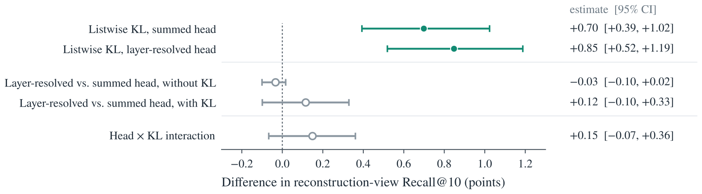
生成模型真正消费的，是整数 SID 划出的桶。CARE-LR 冻结了第一级，一位桶和 CARE-SID 完全相同；两位、三位前缀的分桶召回，两者最多只差 0.02 个点。分桶质量几乎没变，尽管部分视频的后两位会改。
对比学习能加多少，很依赖原来的 embedding。在没有用搜索数据训练过的通用多模态 embedding 上，CARE-SID 相对 R3-VAE 的 Recall@10 高 2.10 个点。换成本系统里用搜索数据对比训练过的 embedding，这个差距缩到 0.07，两者在 @10 基本持平。从通用 embedding 换到搜索调过的 embedding，CARE-SID 的 Recall@10 从 27.55% 升到 65.22%，embedding 本身从 55.65% 升到 88.14%。换量化器通常只差几个点。作者的判断是：在他们的系统里，先把 embedding 的检索质量做上去，再编 SID，这一步回报最大。
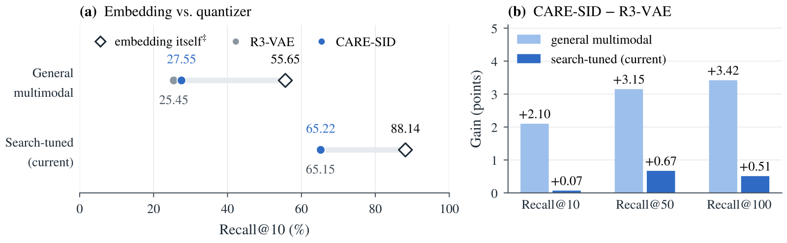
CARE-SID 已经用在工业视频搜索的生成式检索阶段。离线给每个视频编三位数 SID，新视频按同一套权重增量编码。上线不用重建头。若要部署 CARE-LR，因为后两级 codebook 会动，需要同时刷新 SID 映射，以及生成模型的训练标签和用户历史。
这对做生成式检索的人意味着什么
先把检索 embedding 做好，再在这个空间上按查询排序来编 SID；在本文实验里，同一套 embedding 上所比较的量化器，召回差距只有几个点。
如果 embedding 已经在搜索数据上对比训练过，CARE-SID 那种量化前的对比对齐，在 Recall@10 上的差距会缩到 0.07 个点。这时可以接着看，量化之后的列表级蒸馏还能不能保住查询下的顺序。同时也要核对：这些收益有没有走进整数 SID，还是只留在不上线的重建头里。生成模型看见的是 SID，看不见重建向量。
局限
全部结果都是离线、SID 级指标。CARE-LR 只在上述小规模试跑里训练过。生成模型的端到端效果，以及更大规模的 CARE-LR，论文写明将在后续版本补充。
R3-VAE 和 CARE 模型的重建视角，用到了不属于整数 SID 的 rating 和参考系数，所以它并不由生成模型写出来的那个 SID 单独决定。这次试跑里 CARE-LR 的收益走的是重建通路，对只消费整数 SID 的生成模型是否有帮助，还要端到端确认。
置信区间只反映查询抽样，不含训练种子的波动，也没有做多重比较校正。评价用的理想文档集合在更早的开发轮次里已经用过，算不上一次全新的盲测。
读完这篇，你觉得
夜读鸮记下了，谢谢你的反馈。
点一下即可，无需登录；再点一次撤回。只统计匿名次数，不记录你是谁。
相关论文RELATED
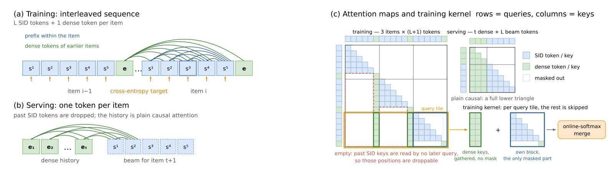
Generative · 2026-10-28PinGER: Token-Efficient Generative Retrieval with Semantic IDs生成式召回把每个物品编成多层 SID 逐层生成，代价是输入侧每个历史物品要占好几个 token。Pinterest 的 PinGER 在训练时给每个物品的 SID 后面再放一个稠密向量 token，并规定任何 token 读取别的物品时只能看它的稠密 token，不能看它的 SID。于是服务时可以丢掉历史里的全部 SID，每个物品只占 1 个 token，结果不变。它把输入压缩做成了训练时的结构约束。离线上它用 170 个 token 达到 TIGER 用 1,024 个 token 的召回率，在 Related Pins 上线后保存数提升 0.62%。 Generative · 2026-11-04Beyond Semantic IDs: Atomic Creator Tokens for Large-Scale Generative RecommendationMeta 这篇论文给每个创作者在语言模型的词表里单独加一个 token，用它取代 SID。原因很直接：SID 是多对一的编码，好几个创作者会共用同一串 SID，模型即使生成对了 SID，也还得猜用户要的是其中哪一个。在 Meta 的创作者推荐数据上只换掉 token 这一层，前 15 个推荐里命中用户下一个互动创作者的比例从 23.58% 提到 43.41%。SID 方案每个用户的推理耗时还约是新方法的 2.7 倍。瓶颈在 SID 这一层，而不在语言模型。代价是每个 token 都要有足够的训练样本，所以作者只把它用在头部创作者上。
Generative · 2026-11-04Beyond Semantic IDs: Atomic Creator Tokens for Large-Scale Generative RecommendationMeta 这篇论文给每个创作者在语言模型的词表里单独加一个 token，用它取代 SID。原因很直接：SID 是多对一的编码，好几个创作者会共用同一串 SID，模型即使生成对了 SID，也还得猜用户要的是其中哪一个。在 Meta 的创作者推荐数据上只换掉 token 这一层，前 15 个推荐里命中用户下一个互动创作者的比例从 23.58% 提到 43.41%。SID 方案每个用户的推理耗时还约是新方法的 2.7 倍。瓶颈在 SID 这一层，而不在语言模型。代价是每个 token 都要有足够的训练样本，所以作者只把它用在头部创作者上。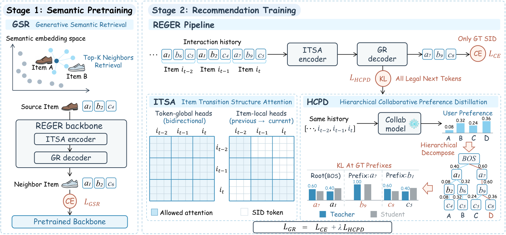
Generative · 2026-10-29REGER: Modeling inter-item Relations with Semantic IDs for Generative Recommendation交叉熵只告诉生成式推荐正确 token 是哪个，其他候选谁更好没有任何信号。电子科大的 REGER 把传统序列模型对全部物品的打分，在正确答案的每个前缀上按下一个 token 所属的分叉把物品概率加总再归一化，得到每一步的分叉偏好，让生成模型去对齐。单独加到 TIGER 上，Beauty 数据集的 Recall@10 从 0.0673 提到 0.0794，推理时间不变，说明它是一个几乎免费的训练改动。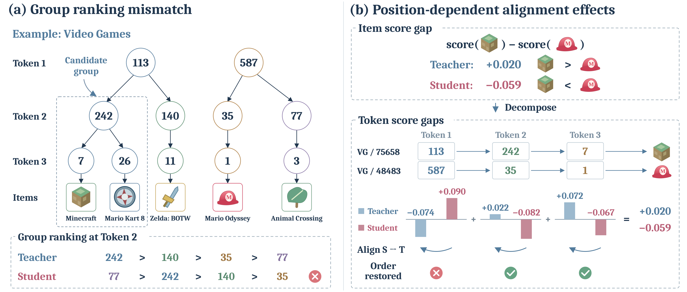
Generative · 2026-10-28MuSID-KD: Multigranularity Knowledge Distillation for Generative Recommendation with Semantic IDs把 SID 生成式推荐模型蒸馏成小模型时，通常只让学生对齐教师在最终推荐物品上的概率分布。华东师大的 MuSID-KD（一种按 SID 层级做多粒度蒸馏的方法）发现这样不够：只对齐物品分布的学生，在 SID 中间层给候选组排出的先后，平均有 53.8% 的比较和教师不一致。教师的知识不只在最后一层的物品概率里，也在每一层前缀的排序里。在三个 Amazon 数据集上，它的 NDCG@10 比基础蒸馏平均高 8.31%，线上推理结构完全不变。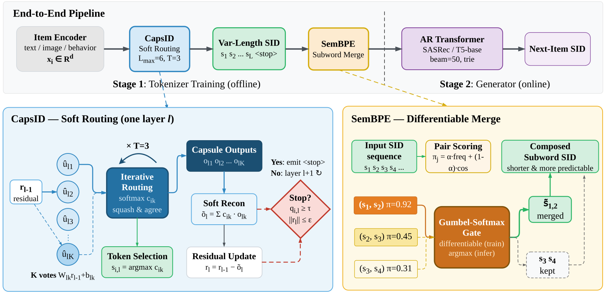
Generative · 2026-05-08CapsID: Soft-Routed Variable-Length Semantic IDs for Generative Recommendation生成式推荐把物品编成一串离散编号，常见的残差量化每层只认最近的一个码，跨类别的物品会丢信息。CapsID 让物品按权重分给几个候选码，残差减去这几个码的加权重建，把握够高就提前停，所以编号长短不一。在亚马逊 Beauty 上，Recall@10 从 0.0770 提到 0.0839；工业数据上召回和带稠密向量的方案持平，延迟约为后者一半。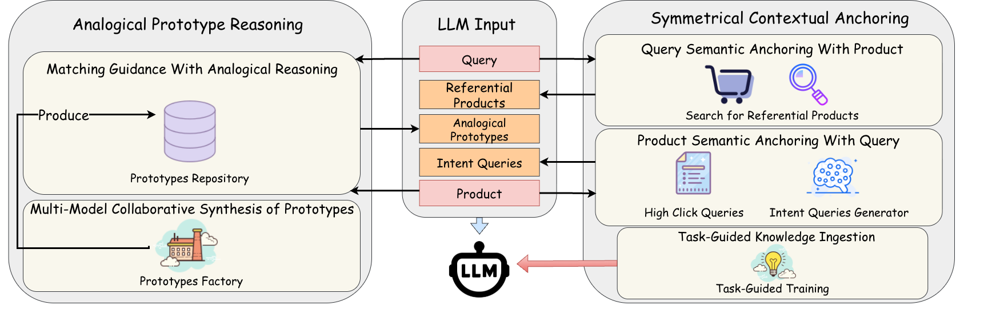
Generative · 2026-04-30K-CARE: Knowledge-driven Symmetrical Contextual Anchoring and Analogical Prototype Reasoning for E-commerce Relevance本文针对电商搜索相关性中 LLM 在工业场景里持续遭遇的 corner case 问题，指出主要瓶颈不是推理路径而是知识边界——参数化记忆缺乏对小众 query/商品的领域知识。作者提出 K-CARE 框架，包含两个互补模块：Symmetrical Contextual Anchoring (SCA) 用对称双向锚点把外部知识填入 LLM 的认知盲区；以及 Analogical Prototype Reasoning，通过原型类比把已知商品的判断模式迁移到不熟悉的长尾商品上。在多个工业相关性数据集上方法相比纯 RL 优化推理路径的基线取得显著提升。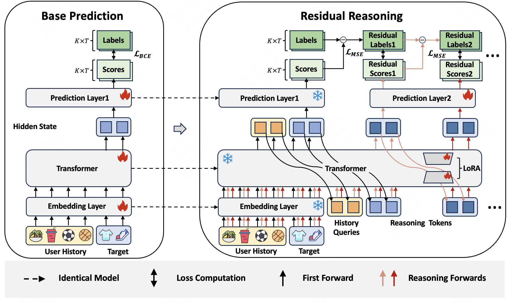
Generative · 2026-10-29Latent Residual Reasoning for Ranking in Generative Recommendation生成式排序模型一次前向就给所有候选打完分，没有机会再细看、修正。美团和中科大的 Refiner 在这之后再多算几步：给每个候选接一个推理 token，每一步只预测加到原分数上的修正量，原模型完全冻结，只训练 LoRA 和新输出层。在 Steam 数据集上，它把美团的生成式排序模型 MTGR 的 AUC 提到 0.7872；接在线上模型之后做 A/B，点击率提升 0.75%。因为只学残差，多算的几步是在原有分数上加修正量，而不是从头重新打分。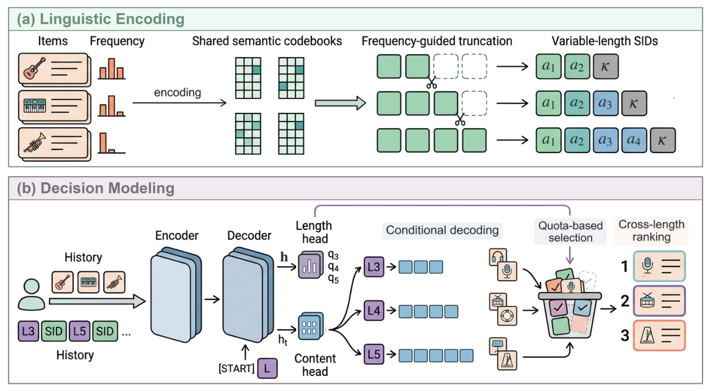
Generative · 2026-10-29JevRec: Linguistic Encoding with Jev-like Decision Modeling for LLM-based Generative Recommendation多数生成式推荐给所有物品同样长度的 SID，热门物品反复为细粒度编码付出成本，缩短编码又会压缩长尾物品的语义。JevRec 借鉴自然语言里常用词更短的规律：先用残差量化给每个物品编出 4 级编码，每一级各有一张所有物品共用的向量表（论文叫码本），每级记下离剩余误差最近一项的序号，越往后越细。它按训练集交互频率把物品排序分组，越热门的组截掉越多末尾的细粒度编码，长尾物品保留完整描述；同一组里截短后前缀相同的物品，末尾再各补一个不同的编号，保证每个物品唯一。它还用一个单独的输出头先预测长度，再按长度生成内容，减少梯度冲突。在三个公开数据集上它全面领先，训练和推理时间都比 TIGER 短。
讨论
欢迎补充实验细节、复现经验或不同看法。需 GitHub 登录。
正在加载讨论…